Contents
% Kyle Decker % Machine Learning % HW 3 close all clc
Data Loading
f = fopen('letter-recognition.data.txt'); data0 = textscan(f,'%s %f %f %f %f %f %f %f %f %f %f %f %f %f %f %f %f', 20000, 'Delimiter',','); fclose(f); data_all = cell2mat(data0(:,2:end)); letter = cell2mat(data0{1,1}); class_all = zeros(size(letter,1),1); class_all_B = (letter=='B'); % Classify B vs D B_ind = find(class_all_B); class_all_D = (letter=='D'); D_ind = find(class_all_D); data = cat(1,data_all(B_ind,:),data_all(D_ind,:)); class = zeros(size(data,1),1); class(1:size(B_ind,1))=1; % B = class 1 class = (class==1); % make logical % data0 = csvread('wine.data.txt'); % data = data0(:,2:end); % class = data0(:,1)>2; % Make binary, wine 1 vs wine 2&3 % Random permutation of the dataset rand_i = randperm(size(class,1)); data_perm = data(rand_i,:); class_perm = class(rand_i);
Using Features themselves for ROC
AUROC_all = zeros(10,size(data_perm,2)); for test_ind = 1:10 p = 0.9; % proportion of the dataset for training m = size(data,1); % Circ shift to create new test and training set data_perm = circshift(data_perm,round((1-p)*m),1); class_perm = circshift(class_perm,round((1-p)*m),1); X = data_perm(1:round(p*m),:); Y = class_perm(1:round(p*m)); Xtest = data_perm(round(p*m)+1:end,:); Ytest = class_perm(round(p*m)+1:end); figure; Yscores = Xtest(:,1); [Xfeat,Yfeat,Tfeat,AUCfeat] = perfcurve(Ytest,Yscores,'true'); AUROC_all(test_ind,1) = AUCfeat; plot(Xfeat, Yfeat) hold on for feat_ind = 2:size(Xtest,2) %feat_ind = 1; Yscores = Xtest(:,feat_ind); [Xfeat,Yfeat,Tfeat,AUCfeat] = perfcurve(Ytest,Yscores,'true'); AUROC_all(test_ind,feat_ind) = AUCfeat; plot(Xfeat, Yfeat) end xlabel('false positive rate'); ylabel('true positive rate'); title_str = ['ROC Curves for Individual Features Test Set: ',num2str(test_ind)]; title(title_str) axis([-0.01,1.01,0,1.01]) legend('F1', 'F2', 'F3', 'F4', 'F5', 'F6', 'F7', 'F8', ... 'F9', 'F10', 'F11', 'F12', 'F13', 'F14', 'F15', 'F16') hold off end fprintf('AUROC (mean +/- standard deviation) for\n'); fprintf('Feature 1: %f +/- %f\n', mean(AUROC_all(:,1)),std(AUROC_all(:,1)) ); fprintf('Feature 2: %f +/- %f\n', mean(AUROC_all(:,2)),std(AUROC_all(:,2)) ); fprintf('Feature 3: %f +/- %f\n', mean(AUROC_all(:,3)),std(AUROC_all(:,3)) ); fprintf('Feature 4: %f +/- %f\n', mean(AUROC_all(:,4)),std(AUROC_all(:,4)) ); fprintf('Feature 5: %f +/- %f\n', mean(AUROC_all(:,5)),std(AUROC_all(:,5)) ); fprintf('Feature 6: %f +/- %f\n', mean(AUROC_all(:,6)),std(AUROC_all(:,6)) ); fprintf('Feature 7: %f +/- %f\n', mean(AUROC_all(:,7)),std(AUROC_all(:,7)) ); fprintf('Feature 8: %f +/- %f\n', mean(AUROC_all(:,8)),std(AUROC_all(:,8)) ); fprintf('Feature 9: %f +/- %f\n', mean(AUROC_all(:,9)),std(AUROC_all(:,9)) ); fprintf('Feature 10: %f +/- %f\n', mean(AUROC_all(:,10)),std(AUROC_all(:,10)) ); fprintf('Feature 11: %f +/- %f\n', mean(AUROC_all(:,11)),std(AUROC_all(:,11)) ); fprintf('Feature 12: %f +/- %f\n', mean(AUROC_all(:,12)),std(AUROC_all(:,12)) ); fprintf('Feature 13: %f +/- %f\n', mean(AUROC_all(:,13)),std(AUROC_all(:,13)) ); fprintf('Feature 14: %f +/- %f\n', mean(AUROC_all(:,14)),std(AUROC_all(:,14)) ); fprintf('Feature 15: %f +/- %f\n', mean(AUROC_all(:,15)),std(AUROC_all(:,15)) ); fprintf('Feature 16: %f +/- %f\n', mean(AUROC_all(:,16)),std(AUROC_all(:,16)) );
AUROC (mean +/- standard deviation) for Feature 1: 0.485631 +/- 0.027282 Feature 2: 0.476492 +/- 0.020072 Feature 3: 0.480288 +/- 0.012479 Feature 4: 0.486156 +/- 0.026127 Feature 5: 0.572127 +/- 0.028778 Feature 6: 0.522189 +/- 0.038237 Feature 7: 0.564404 +/- 0.034638 Feature 8: 0.436370 +/- 0.038132 Feature 9: 0.298452 +/- 0.036274 Feature 10: 0.466322 +/- 0.041560 Feature 11: 0.587915 +/- 0.045843 Feature 12: 0.746924 +/- 0.031056 Feature 13: 0.381931 +/- 0.037842 Feature 14: 0.531750 +/- 0.047747 Feature 15: 0.870559 +/- 0.028722 Feature 16: 0.804287 +/- 0.034811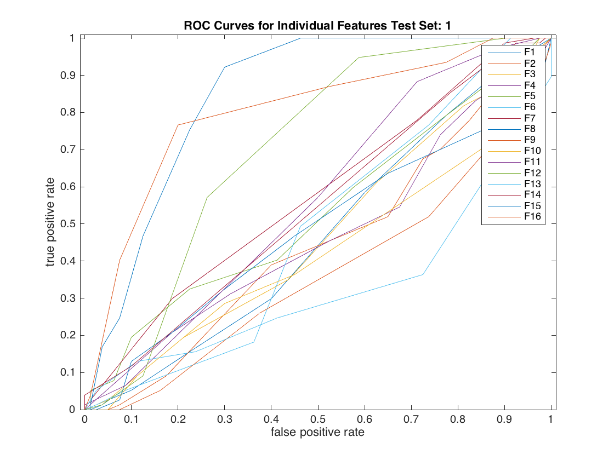 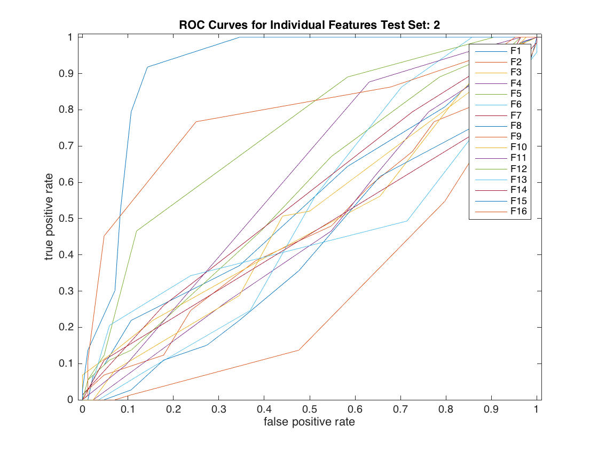 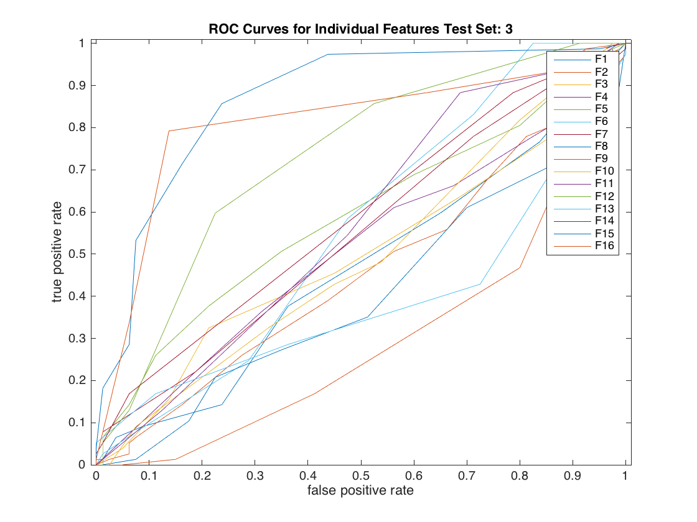 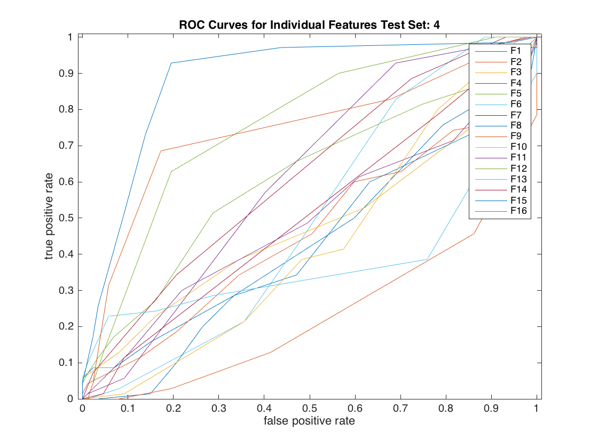 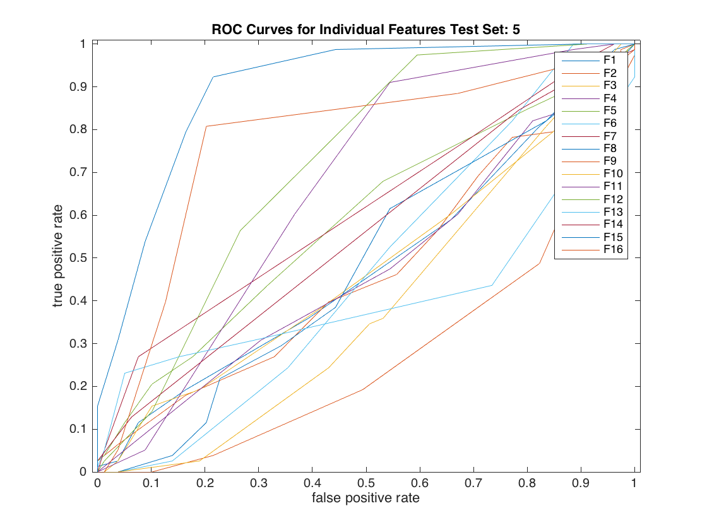 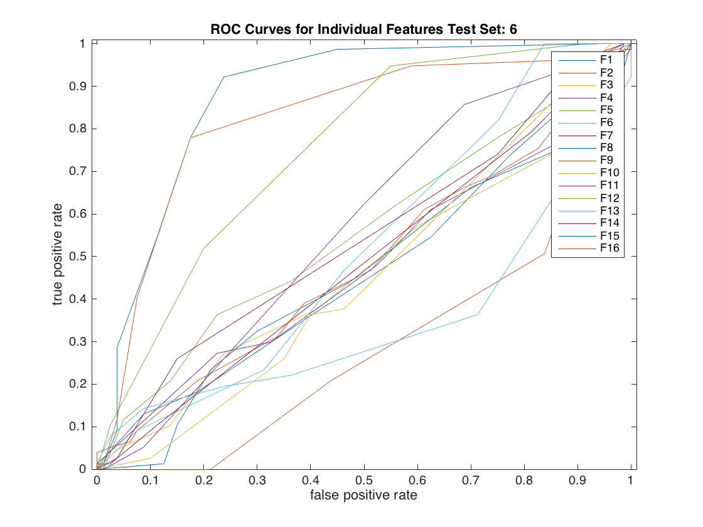 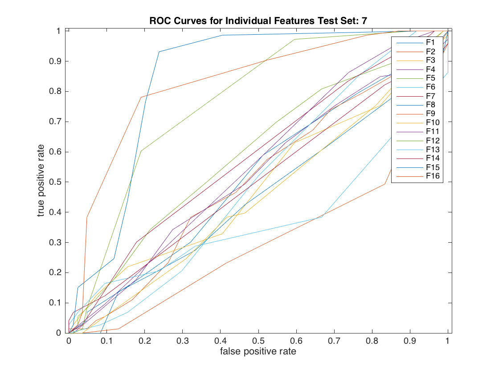 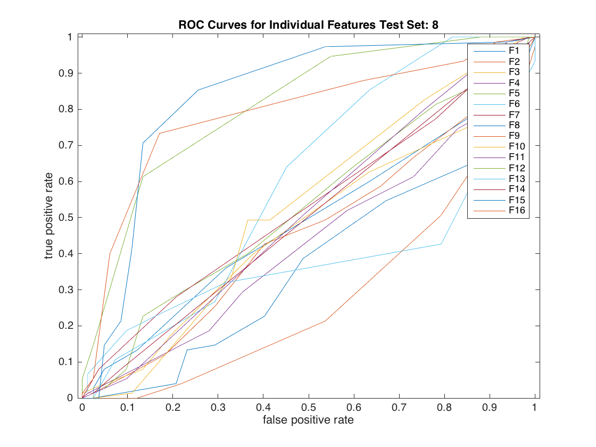 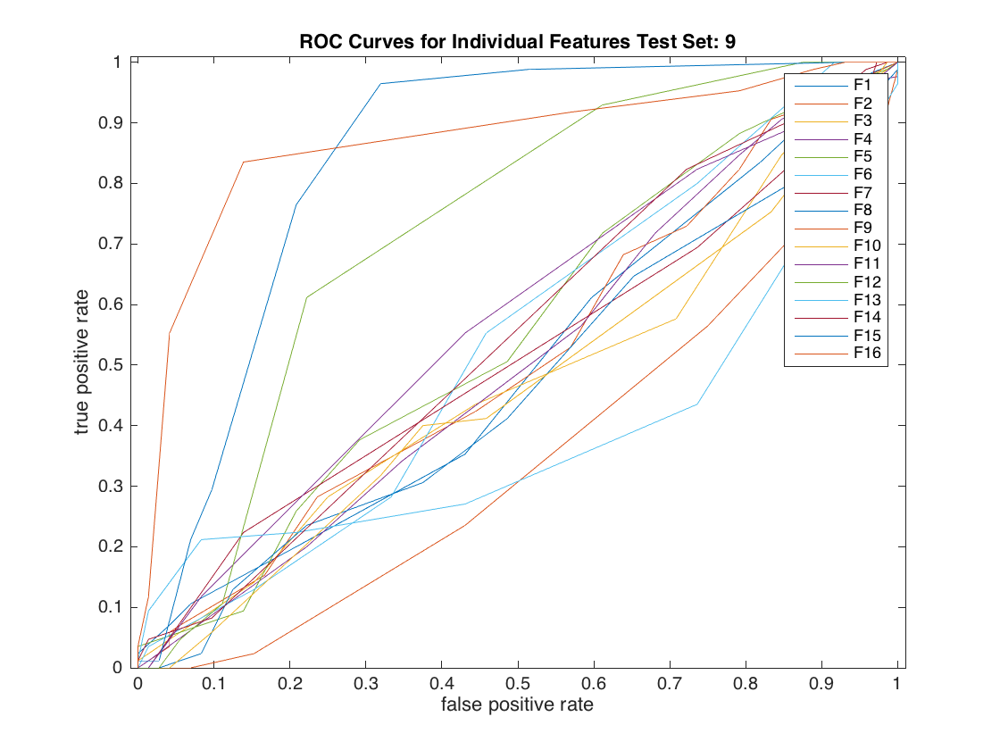 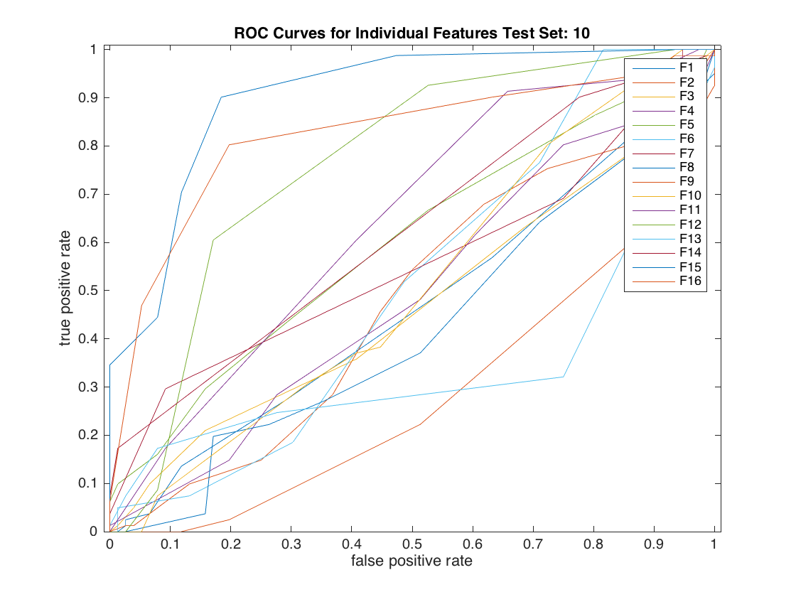
For 5 different Algorithms
AUCglm = zeros(10,1);
AUCsvm = zeros(10,1);
AUCcart = zeros(10,1);
AUCrf = zeros(10,1);
AUCbt = zeros(10,1);
for test_ind = 1:10
fprintf('Performing Testing using Fold %d of 10 \n',test_ind); p = 0.9; % proportion of the dataset for training m = size(data,1); % Circ shift to create new test and training set data_perm = circshift(data_perm,round((1-p)*m),1); class_perm = circshift(class_perm,round((1-p)*m),1); X = data_perm(1:round(p*m),:); Y = class_perm(1:round(p*m)); Xtest = data_perm(round(p*m)+1:end,:); Ytest = class_perm(round(p*m)+1:end); % Generalized Linear Model (Logistic Regression) glmModel = fitglm(X, Y, 'Distribution', 'binomial', 'Link', 'logit'); Yscores = predict(glmModel, Xtest); % these are the posterior probabilities % of class 1 for the test data % ... compute the standard ROC curve and the AUROC [Xglm, Yglm, Tglm, AUCglm(test_ind)] = perfcurve(Ytest, Yscores, 'true');
Performing Testing using Fold 1 of 10
Performing Testing using Fold 2 of 10
Performing Testing using Fold 3 of 10
Performing Testing using Fold 4 of 10
Performing Testing using Fold 5 of 10
Performing Testing using Fold 6 of 10
Performing Testing using Fold 7 of 10
Performing Testing using Fold 8 of 10
Performing Testing using Fold 9 of 10
Performing Testing using Fold 10 of 10
Nested CV to choose kernel for SVM
AUCsvm_nested = zeros(10,3);
for val_ind = 1:10
pn = 0.9; % proportion of data for training
mn = size(X,1);
X = circshift(X,round((1-pn)*mn),1);
Y = circshift(Y,round((1-pn)*mn),1);
X_nested = X(1:round(pn*mn),:);
Y_nested = Y(1:round(pn*mn));
X_nested_test = X(round(pn*mn)+1:end,:);
Y_nested_test = Y(round(pn*mn)+1:end);
for k_index = 1:3
% Define K parameter values
if k_index == 1
K = 'linear';
elseif k_index == 2
K = 'polynomial';
elseif k_index == 3
K = 'rbf';
end
% Support Vector Machine (SVM)
svmModel = fitcsvm(X_nested, Y_nested, 'Standardize', true, 'KernelFunction', K);
svmModel = fitPosterior(svmModel);
[~, Yscores] = predict(svmModel, X_nested_test);
% ... compute the standard ROC curve and the AUROC
[Xsvm_nested, Ysvm_nested, Tsvm_nested, AUCsvm_nested(val_ind,k_index)] = perfcurve(Y_nested_test, Yscores(:, 2), 'true');
end
end
% Pick the Paramter with Highest Mean AUROC across validation folds
AUCsvm_nested_mean = mean(AUCsvm_nested,1);
k_best_index = find(AUCsvm_nested_mean == max(AUCsvm_nested_mean));
if k_best_index == 1
K_best_svm = 'linear'
elseif k_best_index == 2
K_best_svm = 'polynomial'
elseif k_best_index == 3
K_best_svm = 'rbf'
end
% Support Vector Machine (SVM) for Test Set
svmModel = fitcsvm(X, Y, 'Standardize', true, 'KernelFunction', K_best_svm);
svmModel = fitPosterior(svmModel);
[~, Yscores] = predict(svmModel, Xtest);
% ... compute the standard ROC curve and the AUROC
[Xsvm, Ysvm, Tsvm, AUCsvm(test_ind)] = perfcurve(Ytest, Yscores(:, 2), 'true');
K_best_svm = rbf
K_best_svm = rbf
K_best_svm = polynomial
K_best_svm = rbf
K_best_svm = rbf
K_best_svm = polynomial
K_best_svm = rbf
K_best_svm = rbf
K_best_svm = rbf
K_best_svm = rbf
Classification Tree (CART)
ctreeModel = fitctree(X, Y);
[~, Yscores, ~, ~] = predict(ctreeModel, Xtest);
% ... compute the standard ROC curve and the AUROC
[Xcart, Ycart, Tcart, AUCcart(test_ind)] = perfcurve(Ytest, Yscores(:, 2), 'true');
Nested CV to choose number of trees for RF
AUCrf_nested = zeros(10,5);
k_values = [3,10,30,60,100];
for val_ind = 1:10
pn = 0.9; % proportion of data for training
mn = size(X,1);
X = circshift(X,round((1-pn)*mn),1);
Y = circshift(Y,round((1-pn)*mn),1);
X_nested = X(1:round(pn*mn),:);
Y_nested = Y(1:round(pn*mn));
X_nested_test = X(round(pn*mn)+1:end,:);
Y_nested_test = Y(round(pn*mn)+1:end);
for k_index = 1:length(k_values)
% Random Forest (RF)
rfModel = fitensemble(X_nested, Y_nested, 'Bag', k_values(k_index), 'Tree', 'Type', 'Classification');
[~, Yscores] = predict(rfModel, X_nested_test);
% ... compute the standard ROC curve and the AUROC
[Xrf_nested, Yrf_nested, Trf_nested, AUCrf_nested(val_ind,k_index)] = perfcurve(Y_nested_test, Yscores(:, 2), 'true');
end
end
% Pick the Paramter with Highest Mean AUROC across validation folds
AUCrf_nested_mean = mean(AUCrf_nested,1);
k_best_index = find(AUCrf_nested_mean == max(AUCrf_nested_mean));
K_best_rf = k_values(k_best_index)
% Random Forest (RF)
rfModel = fitensemble(X, Y, 'Bag', K_best_rf, 'Tree', 'Type', 'Classification');
[~, Yscores] = predict(rfModel, Xtest);
% ... compute the standard ROC curve and the AUROC
[Xrf, Yrf, Trf, AUCrf(test_ind)] = perfcurve(Ytest, Yscores(:, 2), 'true');
K_best_rf = 100
K_best_rf =
30
K_best_rf = 100
K_best_rf = 100
K_best_rf = 100
K_best_rf = 100
K_best_rf = 100
K_best_rf =
60
K_best_rf = 100
K_best_rf = 100
% Boosted Trees btModel = fitensemble(X, Y, 'AdaBoostM1', 100, 'Tree'); [~, Yscores] = predict(btModel, Xtest); % ... compute the standard ROC curve and the AUROC [Xbt, Ybt, Tbt, AUCbt(test_ind)] = perfcurve(Ytest, sigmf(Yscores(:, 2), [1 0]), ... 'true'); % ROC Curves figure; plot(Xglm, Yglm,'--') hold on plot(Xsvm, Ysvm,'--.') plot(Xcart, Ycart,'--') plot(Xrf, Yrf,'--') plot(Xbt, Ybt) legend('Logistic Regression', 'Support Vector Machine', 'CART', ... 'Random Forest', 'Boosted Trees') xlabel('false positive rate'); ylabel('true positive rate'); title_str = ['ROC Curves for Classification Algorithms for Test Set: ',num2str(test_ind)]; title(title_str) axis([-0.01,1.01,0,1.01]) hold off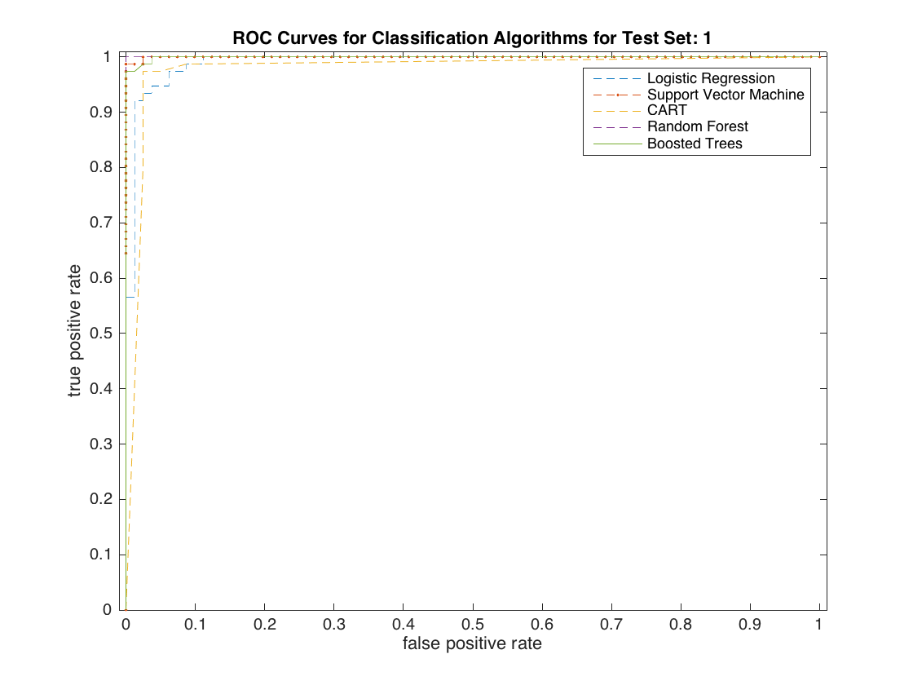 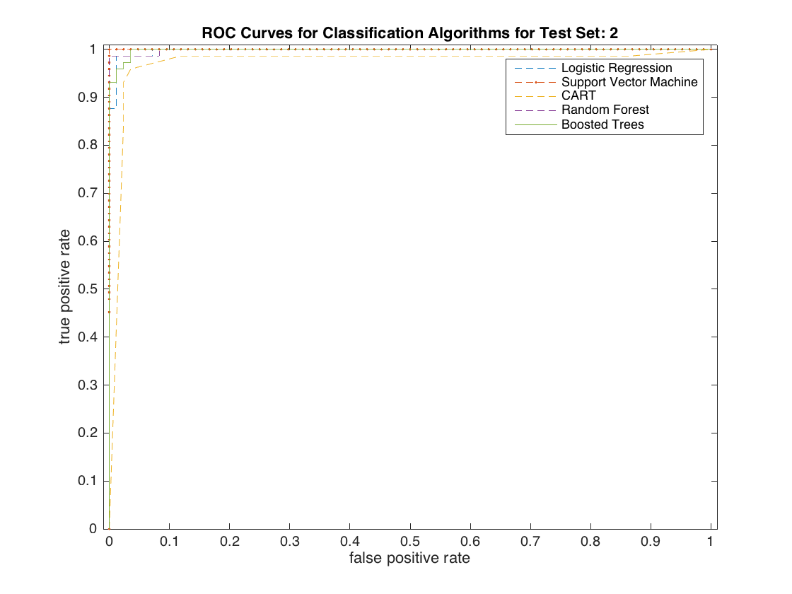 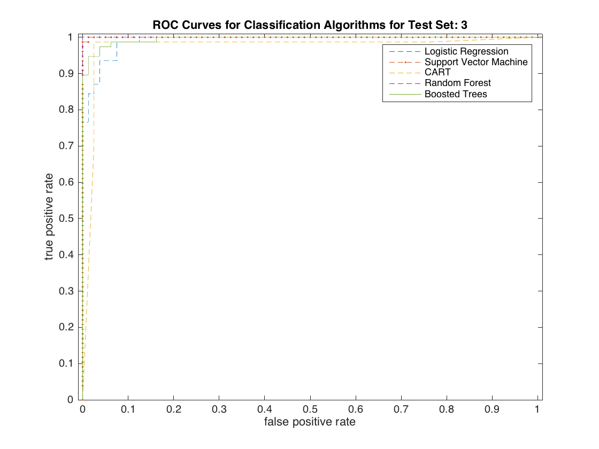 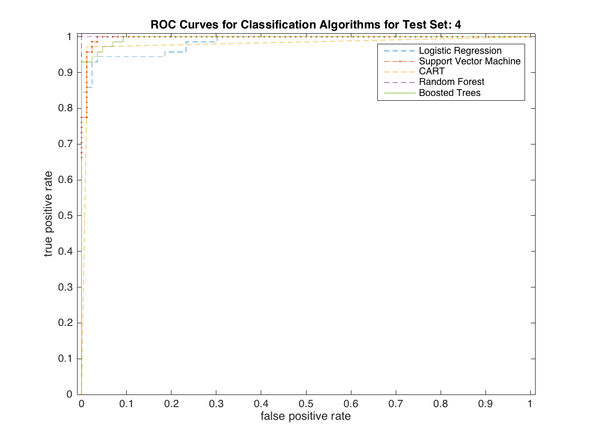 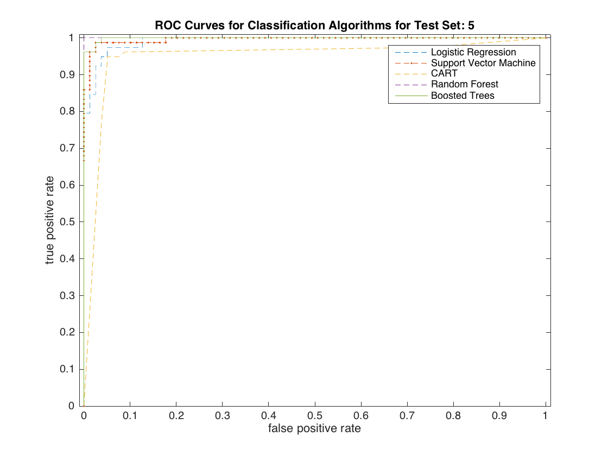 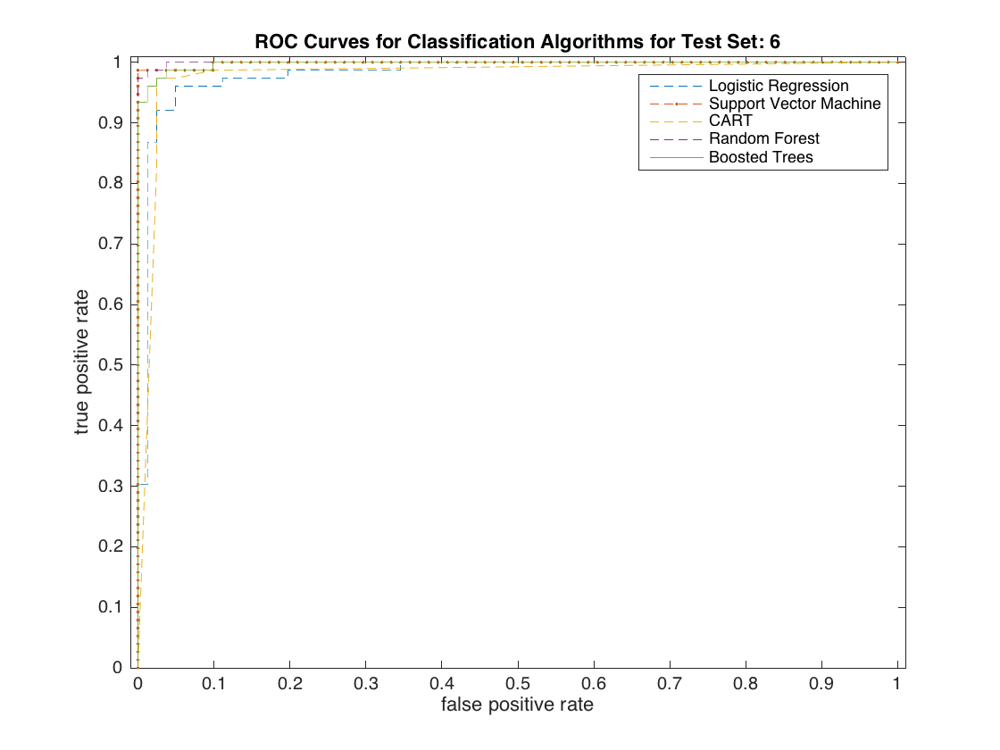 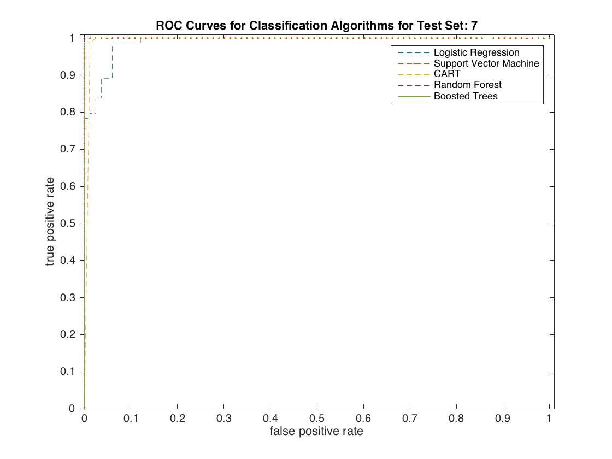 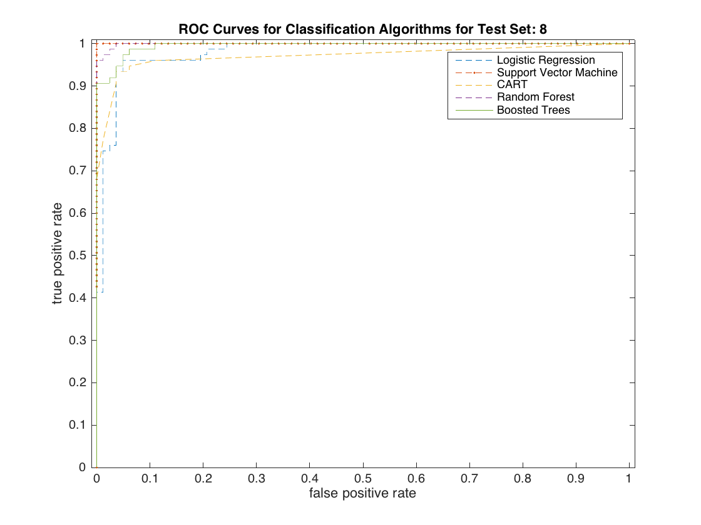 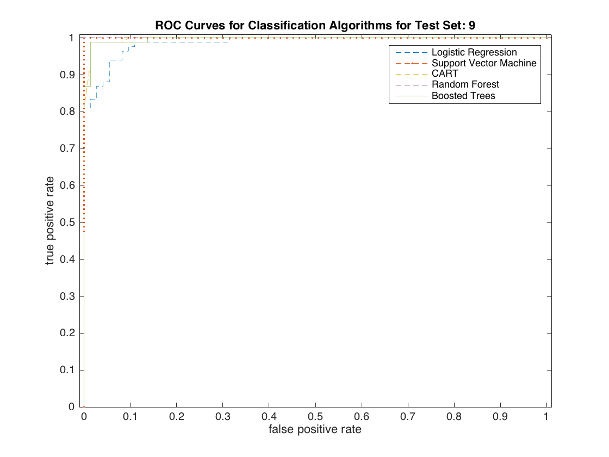
end
AUROC
fprintf('AUROC (mean +/- standard deviation) for\n'); fprintf('Logistic Regression: %f +/- %f\n', mean(AUCglm), std(AUCglm)); fprintf('Support Vector Machine: %f +/- %f\n', mean(AUCsvm), std(AUCsvm)); fprintf('CART: %f +/- %f\n', mean(AUCcart),std(AUCcart)); fprintf('Random Forest: %f +/- %f\n', mean(AUCrf),std(AUCrf)); fprintf('Boosted Trees: %f +/- %f\n', mean(AUCbt),std(AUCbt)); return
AUROC (mean +/- standard deviation) for Logistic Regression: 0.989013 +/- 0.006315 Support Vector Machine: 0.999072 +/- 0.001554 CART: 0.977451 +/- 0.013474 Random Forest: 0.999723 +/- 0.000461 Boosted Trees: 0.997696 +/- 0.001729